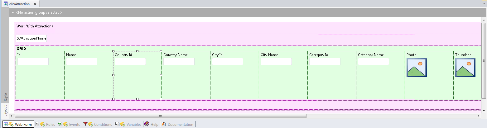
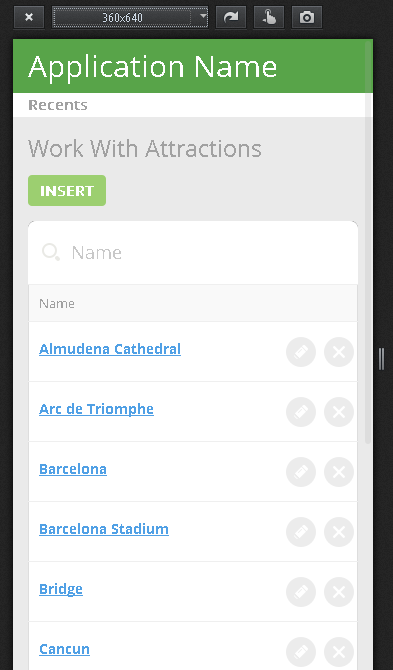
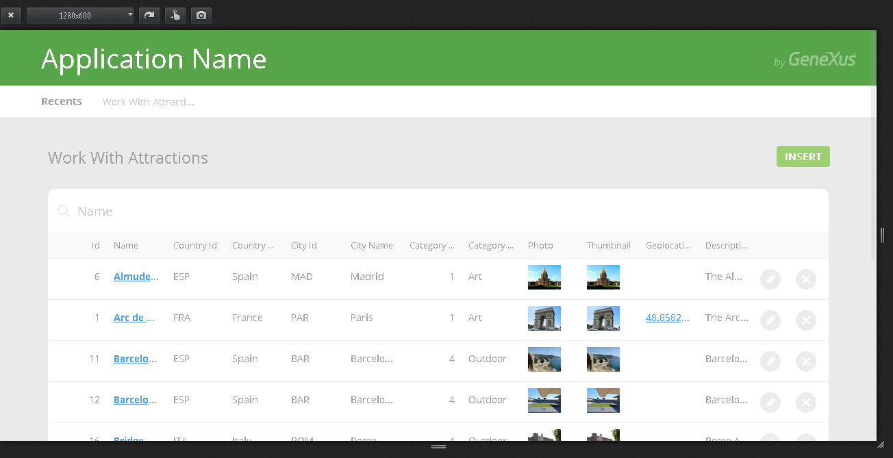
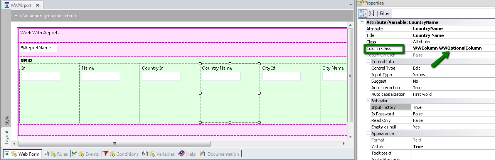
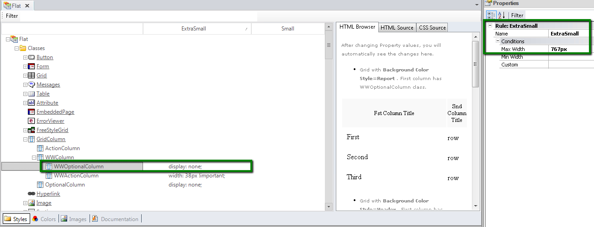

In a Responsive Web Application only the relevant information is shown for mobile applications; this implies that some elements which are displayed on desktop screens, are not displayed on phone screens. This is the case of the Work With Pattern for web, whose default form generates the Abstract layout shown below - when the Web Form Defaults property is set to Responsive Web Design.  At runtime...

 How it is designedThe user can decide, at design time, which columns will be visible and which won't. In the example, select one grid column which is hidden at runtime for the extra small screen size and note that the WWOptionalColumn class is assigned to the Column Class Property.  The WWOptionalColumn class belongs to the "Flat" Theme, and has property values which depend on a conditional rule called "ExtraSmall". See Conditional Class Properties for Themes for more information about this topic.  Note that the display property value for the WWOptionalColumn class is none, when the "ExtraSmall" rule evaluates to TRUE. The conditional rule is translated into a media query, which is transparent to the user, and this is what makes it possible to obtain the desired behavior and hide some of the grid columns. See AlsoHow to design a responsive web application: Hiding an element of the form
|